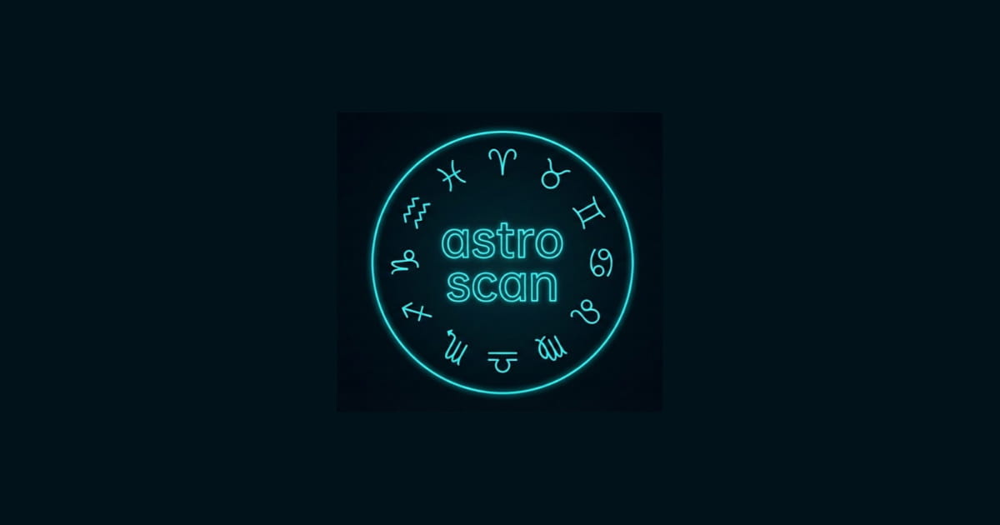

Free • No registration • Instant results. AstroScan is a free online personality test that determines your behavioral archetype and Chinese zodiac sign based on your responses. Then, using professional Swiss Ephemeris calculations, we provide compatibility insights. Curious how your chart looks in different astrological traditions? Scroll down to compare Western and Vedic (Jyotish) approaches.
Бесплатно • Без регистрации • Мгновенный результат. AstroScan — это бесплатный онлайн-тест личности, который определяет ваш поведенческий архетип и знак китайского зодиака на основе ваших ответов. Затем, используя профессиональные швейцарские эфемериды, мы даём анализ совместимости. Интересно, как ваша карта выглядит в разных астрологических традициях? Прокрутите вниз, чтобы сравнить западный и ведический (джйотиш) подходы.
Gratis • Sin registro • Resultados instantáneos. AstroScan es una prueba de personalidad gratuita en línea que determina tu arquetipo de comportamiento y signo del zodíaco chino según tus respuestas. Luego, utilizando cálculos profesionales de efemérides suizas, proporcionamos información sobre compatibilidad. ¿Tienes curiosidad por saber cómo se ve tu carta en diferentes tradiciones astrológicas? Desplázate hacia abajo para comparar los enfoques occidental y védico (Jyotish).
مجاني • بدون تسجيل • نتائج فورية. AstroScan هي أداة مجانية لاختبار الشخصية عبر الإنترنت تحدد نموذجك السلوكي وعلامة الأبراج الصينية بناءً على إجاباتك. ثم، باستخدام حسابات التقويم الفلكي السويسرية الاحترافية، نقدم رؤى التوافق. هل لديك فضول لمعرفة كيف يبدو مخططك في التقاليد الفلكية المختلفة؟ قم بالتمرير لأسفل لمقارنة النهج الغربي والفيدي (جيوتیش).
निःशुल्क • कोई पंजीकरण नहीं • तत्काल परिणाम। AstroScan एक मुफ्त ऑनलाइन व्यक्तित्व परीक्षण है जो आपकी प्रतिक्रियाओं के आधार पर आपके व्यवहारिक आर्कटाइप और चीनी राशि चक्र का निर्धारण करता है। फिर, पेशेवर स्विस एफेमेरिस गणनाओं का उपयोग करके, हम अनुकूलता अंतर्दृष्टि प्रदान करते हैं। उत्सुक हैं कि विभिन्न ज्योतिषीय परंपराओं में आपका चार्ट कैसा दिखता है? पश्चिमी और वैदिक (ज्योतिष) दृष्टिकोणों की तुलना करने के लिए नीचे स्क्रॉल करें।
Kostenlos • Keine Registrierung • Sofortige Ergebnisse. AstroScan ist ein kostenloser Online-Persönlichkeitstest, der Ihren Verhaltensarchetyp und Ihr chinesisches Sternzeichen basierend auf Ihren Antworten bestimmt. Anschließend liefern wir mithilfe professioneller Schweizer Ephemeriden-Berechnungen Kompatibilitätseinblicke. Neugierig, wie Ihr Horoskop in verschiedenen astrologischen Traditionen aussieht? Scrollen Sie nach unten, um westliche und vedische (Jyotish) Ansätze zu vergleichen.
Grátis • Sem registro • Resultados instantâneos. AstroScan é um teste de personalidade online gratuito que determina seu arquétipo comportamental e signo do zodíaco chinês com base em suas respostas. Em seguida, usando cálculos profissionais das Efemérides Suíças, fornecemos insights de compatibilidade. Curioso para saber como seu mapa se parece em diferentes tradições astrológicas? Role para baixo para comparar as abordagens ocidental e védica (Jyotish).
Gratis • Tanpa registrasi • Hasil instan. AstroScan adalah tes kepribadian online gratis yang menentukan arketipe perilaku dan tanda zodiak Cina Anda berdasarkan respons Anda. Kemudian, menggunakan perhitungan Swiss Ephemeris profesional, kami memberikan wawasan kompatibilitas. Penasaran bagaimana bagan Anda terlihat dalam tradisi astrologi yang berbeda? Gulir ke bawah untuk membandingkan pendekatan Barat dan Weda (Jyotish).

AstroScan Lab is an independent research project exploring the intersection of behavioral psychology and computational astronomy. We do not claim supernatural powers — our algorithms are based on verified Swiss Ephemeris data and established personality typologies. The test is provided for educational and self-reflection purposes.
AstroScan Lab — независимый исследовательский проект на стыке поведенческой психологии и вычислительной астрономии. Мы не претендуем на сверхъестественные способности — наши алгоритмы основаны на проверенных данных Швейцарских эфемерид и известных типологиях личности. Тест предоставляется для образовательных целей и самопознания.
AstroScan Lab es un proyecto de investigación independiente que explora la intersección de la psicología conductual y la astronomía computacional. No afirmamos poderes sobrenaturales: nuestros algoritmos se basan en datos verificados de Swiss Ephemeris y tipologías de personalidad establecidas. La prueba se proporciona con fines educativos y de autorreflexión.
AstroScan Lab هو مشروع بحثي مستقل يستكشف تقاطع علم النفس السلوكي وعلم الفلك الحسابي. نحن لا ندعي قوى خارقة للطبيعة - تستند خوارزمياتنا إلى بيانات التقويم الفلكي السويسرية الموثقة وأنماط الشخصية المعروفة. يتم توفير الاختبار للأغراض التعليمية والتأمل الذاتي.
AstroScan Lab व्यवहारिक मनोविज्ञान और कम्प्यूटेशनल खगोल विज्ञान के चौराहे का पता लगाने वाली एक स्वतंत्र शोध परियोजना है। हम अलौकिक शक्तियों का दावा नहीं करते हैं - हमारे एल्गोरिदम सत्यापित स्विस एफेमेरिस डेटा और स्थापित व्यक्तित्व टाइपोलॉजी पर आधारित हैं। परीक्षण शैक्षिक और आत्म-चिंतन उद्देश्यों के लिए प्रदान किया जाता है।
AstroScan Lab ist ein unabhängiges Forschungsprojekt, das die Schnittstelle zwischen Verhaltenspsychologie und computergestützter Astronomie erforscht. Wir erheben keinen Anspruch auf übernatürliche Kräfte – unsere Algorithmen basieren auf verifizierten Schweizer Ephemeriden-Daten und etablierten Persönlichkeitstypologien. Der Test wird zu Bildungs- und Selbstreflexionszwecken bereitgestellt.
AstroScan Lab é um projeto de pesquisa independente que explora a interseção da psicologia comportamental e da astronomia computacional. Não reivindicamos poderes sobrenaturais - nossos algoritmos são baseados em dados verificados das Efemérides Suíças e tipologias de personalidade estabelecidas. O teste é fornecido para fins educacionais e de autorreflexão.
AstroScan Lab adalah proyek penelitian independen yang mengeksplorasi persimpangan psikologi perilaku dan astronomi komputasi. Kami tidak mengklaim kekuatan supernatural — algoritme kami didasarkan pada data Swiss Ephemeris yang terverifikasi dan tipologi kepribadian yang mapan. Tes ini disediakan untuk tujuan pendidikan dan refleksi diri.